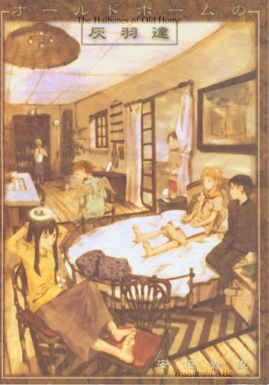

Anime
Anime
Manga2002 · Drama, Fantasy, Mystery
Haibane Renmei
灰羽連盟
AniList8.0
Animeter—
Episodes13 ep
MangaOwn end
Anime finished. Where does the manga pick up?
StatusOwn ending
The anime is based on an unfinished two-chapter doujinshi, and creator Yoshitoshi Abe wrote the anime's screenplay to continue the story. Extra material exists in 'Haibane Lifestyle Diary' and 'The Haibane of Old Home: Extra Edition'.